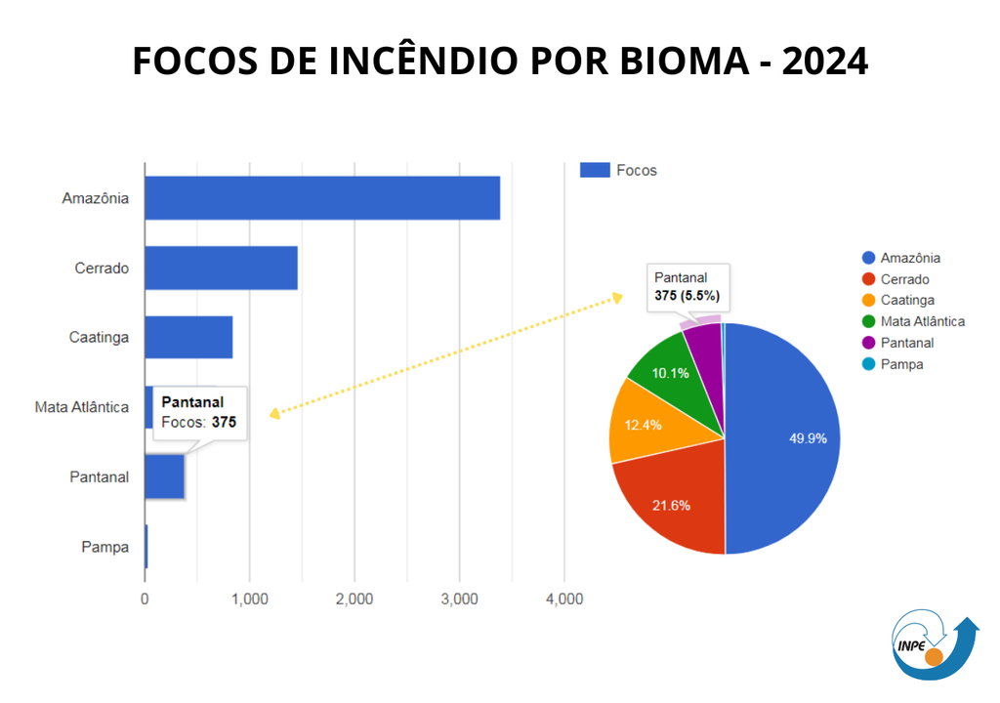

Introdução ao Tema
As queimadas são um problema ambiental significativo que afeta a fauna, flora e qualidade do ar. Este site visa informar e conscientizar sobre suas causas, consequências e formas de prevenção.

As queimadas são um problema ambiental significativo que afeta a fauna, flora e qualidade do ar. Este site visa informar e conscientizar sobre suas causas, consequências e formas de prevenção.
As principais causas das queimadas incluem:
As queimadas afetam gravemente a fauna, flora e a qualidade do ar.
As queimadas têm efeitos diretos na saúde pública e na economia local.
Gráfico ilustrando os impactos das queimadas:
Dicas para evitar queimadas:
Se você avistar uma queimada, entre em contato com as autoridades locais.
Endereço: Rua Tiradendes, 283 - Três Rios, RJ
Telefone: 193